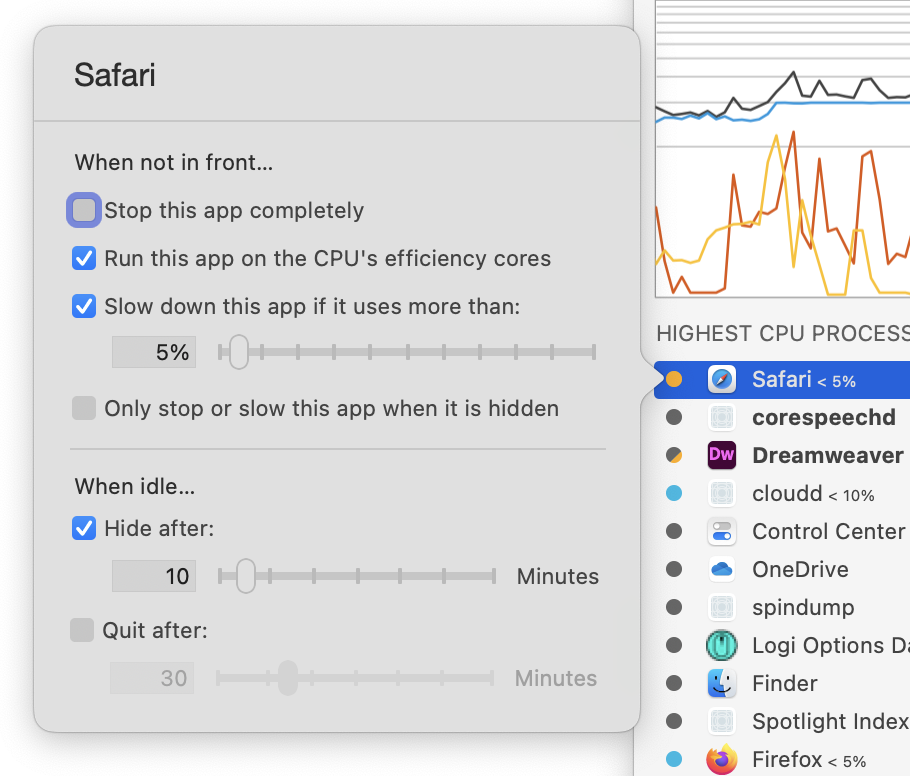

App Tamer Help
App Tamer HelpManaging Apps

When you click on an application in App Tamer's list of processes, a window like the one at right pops up. Choose one of the checkboxes to reduce the amount of CPU and battery power the app uses:
Stop this app completely
When you turn on this checkbox, App Tamer will pause the app whenever it's in the background. This saves the most power, but prohibits any activity in that application until you bring it to the front.
In web browsers like Safari, Firefox and Chrome, this means that animated ads will not play and websites like Facebook will not automatically refresh every few minutes. Applications like Twitter, Messages and Skype that sync with servers on the Internet won't do so until you bring them to the front.
Run this app on the CPU's efficiency cores
On Apple Silicon-powered Macs, this option instructs the system to run the app on the processor's efficiency cores. The app will run more slowly, will consume less power and will interfere less with whatever app you have in front.
On Intel-powered Macs, this checkbox is titled "Run this app as a low-priority process". Turning it on will reduce its priority, both in terms of CPU usage and disk and network I/O. This will reduce its impact on other apps and cut its energy use somewhat, but not drastically.
This option - on both Apple Silicon and Intel Macs - is a good, low-overhead way to reduce the impact of a CPU-hogging application. If it isn't enough, you can combine it with the "Slow down" setting below to both de-prioritize the app and throttle its CPU usage.
Slow down this app if it uses more than [x]%
Turning on this checkbox prevents an application from using more than a certain amount of CPU time when it's in the background. App Tamer monitors the app's activity and slows it down if it starts to use more CPU than you've allowed for it. This will also reduce the amount of heat (and resulting fan noise) generated by your Mac and keep your machine more responsive, rather than letting it get bogged down with a lot of background activity.
This strategy will not save as much power as stopping an application completely, but will allow the app to do some work in the background at a reduced speed. It's useful for applications like Mail, Spotlight and Time Machine that you still want to work behind the scenes but don't want to impact the performance of other applications or quickly run down your battery.
Only stop or slow this app when it is hidden
This option is enabled when you choose to slow or stop an application, and does what it says it does. App Tamer will not slow or stop the application until you hide it (using the "Hide" or "Hide Others" command in the application menu).
Hide after [x] minutes
This checkbox tells App Tamer to hide an application after it's been idle in the background for more than the specified amount of time. Clicking on the app or otherwise bringing it to the foreground will reset the idle timer.
Quit after [x] minutes
Turning this on will quit an application after it's been idle in the background for more than the specified amount of time. Note that if the application pops up alerts when it quits to warn of unsaved changes, etc, those alerts will still pop up. App Tamer doesn't auto-OK them or otherwise intervene.
Tip
- Holding down the Option key while the settings popover is displayed will bring up additional controls, including a slider to modify the process priority (equivalent to the unix 'nice' command) and a checkbox that will slow apps in the foreground as well as in the background.
Strategies
How to pick a CPU percentage for slowing an application: Try 10% and see if the app still gets its background work done in a time you find acceptable. If it doesn't, give it a little more CPU. There could be a bit of experimentation necessary to find out what works for particular applications and workflows.
Handling "Script is not responding" or "Unresponsive page" warnings: If App Tamer stops some web browsers for too long (including Google Chrome and Firefox) the browser will put up a warning saying that a page or script isn't responding. In these cases it's best to slow them to 1% CPU rather than stopping them completely.
Helpful Details
App Tamer will not stop or slow a web browser while it is downloading a file, nor will it stop Music (or iTunes) while it is playing music or importing music tracks.
To make sure that OS X has time to update necessary application data, App Tamer will periodically wake up stopped applications for a few seconds. (By default, it does this every 5 minutes - this can be changed in your App Tamer preferences).